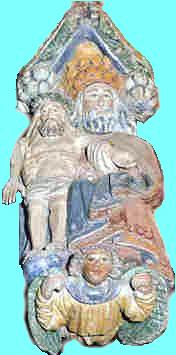
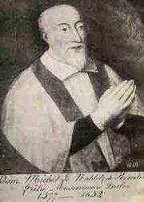
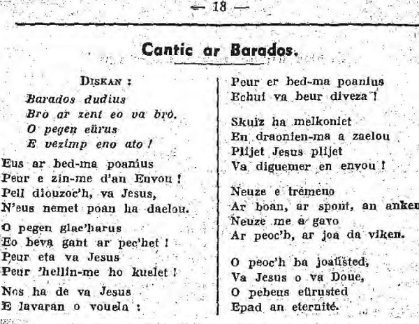
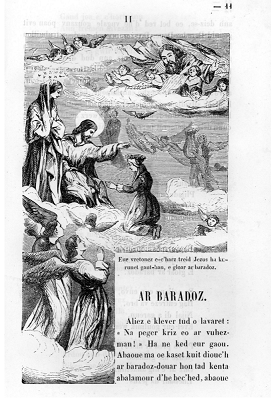
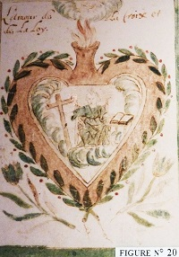
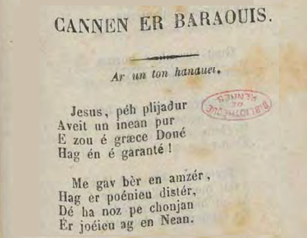
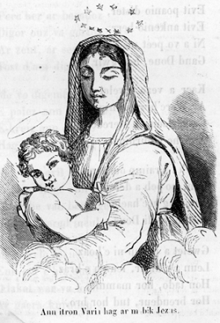

Le Paradis
Song of Paradise
Dialecte de Tréguier
|
- sous forme de manuscrit: dans le fonds Luzel des "Nouvelles acquisitions françaises" de la Bibliothèque Nationale (Paris): "Le Paradis" (en traduction). - sous forme de feuilles volantes: "Cantic ar Baradoz" (N°190 du catalogue Ollivier - 1942, qui le décrit comme un chant de 39 couplets de 4 vers de 6 pieds. 4 feuilles dont 3 imprimées par Lédan et une par Lefournier à Brest, sans doute en 1829 + traduction de E. Souvestre dans "Les Derniers Bretons", I, p.168). - sous forme de recueils: . "Taulennou ac oraesoenou eus an oferen santel", Brest, 1828: "Cantic ar Barados". . par Souvestre, dans ses "Derniers Bretons": "Le Paradis" (traduction, 1835-1837). . par N. Quellien dans "Chansons et danses des Bretons": "Gwerz ar Baradoz" (1889). - 8 sont des reproductions du chant du Barzhaz par La Villemarqué lui-même ou par D. Laurent, - 14 sont des versions bretonnes de feuilles volantes, dont une en vannetais ("Cannen er Baraouis") - 1 est une version française ("Jésus, qu'il sera doux...") - 1 est la notation manuscrite de la mélodie (provenant de l"abbaye de Landévennec). - 1 est un chant différent (incipit "Baradoz dudius.."= "Paradis charmant") sur un imprimé récent conservé à la bibliothèqie diocésaine de Quimper. Les versions "feuilles-volantes" sont repérées sous la référence C-00196. En revanche, la classification Malrieu, distingue sous un n° différent, M- 02223, le cantique "Eus ar gloar eus ar baradoz" composé par le Père Maunoir. |
 |
"Argument" of 1839, T. II, p.355; "Notes and Clarifications" from 1845, p. 472; "Notes" of 1867, p.518). This "touching image of Breton piety" is barely altered by the author's mother in table A: "Sung by homeless poor". - as broadside sheets: "Cantic ar Baradoz" (N°190 in the catalogue Ollivier - 1942, who describes it as a song of 39 stanzas of 4 lines of 6 feet. 4 sheets including 3 printed by Lédan and one by Lefournier in Brest probably in 1829 + 1 French translation by E. Souvestre in "Les Derniers Bretons", I, p.168). - in collection books: . "Taulennou ac oraesoenou eus an oferen santel", Brest, 1828: "Cantic ar Barados". . by Souvestre, in his "Derniers Bretons": "Le Paradis" (translation, 1835-1837). . by N. Quellien in "Chansons et danses des Bretons": Gwerz ar Baradoz. - 8 variants derived from the Barzhaz song by La Villemarqué himself or by D. Laurent; - 14 are broadside versions in the Breton language, one of them in Vannes dialect ("Cannen er Baraouis"); - 1 in French ("Jésus, qu'il sera doux..."); - 1 is a handwritten notation of the melody, kept at Landévennec Abbey. -1 is a different hymn (incipit "Baradoz dudius.."= "Wonderful paradise") from a recent print kept at the Quimper Diocese library. The broadside versions are identified under the reference C-00196. On the other hand, the Malrieu classification identifies under a different number, M-02223, the hymn "Eus ar gloar eus ar baradoz" composed by Father Maunoir. |
(Mode hypodorien, bien que ré mineur dans le Barzhaz)
| Français 1 | Français 2 | English |
|---|---|---|
|
Traduction chantable A partir du dialecte de Tréguier 2008. 1. Jésus, comme elle est immense La joie de l'âme en présence De Dieu, lorsque pour toujours Elle peut vivre en son amour! 2. Que le temps me semble court Et mon fardeau bien peu lourd, Quand je songe jour et nuit A la gloire du Paradis. 3. Levant les yeux vers le ciel, Le ciel, mon havre éternel, Comme, vers lui, je voudrais, Colombe blanche, m'envoler. 4. Vienne l'heure de ma mort, Que j'abandonne ce corps, A qui tant de maux sont dus Et qui m'éloigne de Jésus! 5. C'est avec joie que j'attends Cet ultime événement: Voir enfin, bonheur si doux, Jésus, mon véritable époux. 6. Sitôt que j'aurai brisé Mes chaînes, je monterai Comme une alouette vers Les nuées, à travers les airs. 7. Passant la lune en chemin Vers mon glorieux destin, Je fuirai l'astre du jour Et les étoiles tour à tour. 8. Quand la terre sera loin, Cette vallée de chagrin, Mon dernier regard sera Pour ma Bretagne, tout là-bas. 9. Je vous ferai mes adieux: Toi, pays de mes aïeux, Et toi, monde plein de maux, De tant de douloureux fardeaux. 10. Adieu , âpre pauvreté, Adieu, deuil et coeur brisé, Adieu, troubles et soucis Et adieu, péchés vous aussi! 11. Je ne crains plus désormais Les embûches du mauvais. Puisque que la mort a passé, Jamais plus je ne me perdrai. 12. Comme un navire égaré, Mais de mon corps libéré, Malgré brume et pluie et vent, Je parviens au havre à présent. 13. Tu es le portier, ô mort, Qui m'ouvre l'entrée du port Dont les écueils ont brisé Mon bateau, par les flots poussé. 14. Et tout ce que mes regards, Se portant de toutes parts, Verront, emplira mon coeur Ainsi que mes yeux, de bonheur: 15. Car les deux battants du porche S'ouvriront à mon approche, Et le Ciel laissera voir Les saints prêts à me recevoir. 16. J'entrerai dans le palais De la Sainte Trinité Dans une gloire inouie Au son de suaves mélodies. 17. Et c'est là qu'en vérité Dieu le Père je verrai Ainsi que son Fils béni Accompagnés du Saint Esprit. 18. Et l'on verra Jésus-Christ Poser, d'un geste attendri, Avec sa bénédiction Une couronne sur mon front. 19. - Sachez que vos corps heureux, Au dire du Fils de Dieu, Etaient richesses cachées Dans une terre consacrée. 20. Semblables aux rosiers blancs, Aux lis, aux lilas charmants Ornant l'angle d'un jardin, Désormais vous ornez le mien. 21. Au coeur de mon paradis Vous êtes des rosiers qui, Fanés avec les frimas, Retrouvent ici leur éclat. - 22. De nos souffrances légères, Nos angoisses passagères, C'est là le prix généreux Qu'offre notre Père des cieux. 23. Nous verrons, vision bénie, Au ciel la Vierge Marie, Entourée des douze étoiles, Diadème posé sur son voile. 24. Formant l'orchestre divin, Tous une harpe à la main, Les anges et les archanges Chanteront à Dieu Ses louanges. 25. Nous retrouverons alors, Revêtus de robes d'or, Parents et frères chéris Et amis de notre pays. 26. Des vierges de tous les temps, Des adultes, des enfants, Des veuves, de saintes femmes Dont Dieu a couronné les âmes. 27. Des théories d'angelots Complèteront ce tableau Par leurs harmonieux appels Au dessus des hôtes du Ciel 28. Est-il plus grande merveille Que ce doux essaim d'abeilles Voltigeant parmi les fleurs, Répandant musique et senteurs? 29. Félicité sans pareille Que je vois quand je sommeille Et qui console mon coeur, En cette vie, dans le malheur! |
(Imité du breton) Tiré du Barzaz-Breiz, Didier et Cie , éditeurs, Quai des Augustins, 35, Paris. 1. Jésus! qu'il sera doux De vivre auprès de vous, Au céleste séjour Dans votre saint amour! 2. Quand je songe, Seigneur, A l'éternel bonheur, Je trouve le temps court Et mon fardeau moins lourd. 3. Je voudrais de ces lieux, M'envoler vers les cieux, Ainsi que le ramier, Le ramier prisonnier. 4. A l'instant de ma mort, Doucement, sans effort, Je serai détaché De ce corps de péché 5. Le départ, je l'attends L'attendrai-je longtemps? Je soupire après vous, O mon divin époux. 6. Joyeux et délivré En chantant, je suivrai L'alouette des airs Quand tomberont mes fers. 7. Au-delà du soleil A l'horizon vermeil, Sur deux ailes de feu Je monterai vers Dieu. 8. En approchant des cieux, Je ferai mes adieux, Mes adieux pour jamais Au pays que j'aimais: 9. "Doux champs aimés de Dieu, Mère des saints, adieu! Terre de Breiz-Izel, Je te verrai du ciel. 10. Loin du monde moqueur, Plus de peines de coeur, Plus de pesants fardeaux Plus de péchés nouveaux! 11. Je ne me perdrai plus Je vais trouver Jésus. Je rends grâce à la mort, Elle conduit au port. 13. Elle donne la main Et montre le chemin Aux pauvres matelots Abîmés sous les flots. 15. Des célestes parvis, A mes regards ravis Les portes s'ouvriront Les saints m'accueilleront: 16. Les saints me fêteront, Les anges chanteront : " Gloire, louange, honneur Aux bénis du Seigneur ! » 18. Alors, en souriant, Jésus, à l'Orient Prenant fleurs et rayons, Couronnera nos fronts : 20. "Venez, dira Jésus, Venez, ô mes élus ; Rose, lis immortel, Venez fleurir au ciel ! 21. « Vous ne pouviez mourir; Venez, venez fleurir Dans la félicité De l'éternel été." 22. Quel bonheur! quel bonheur De vous bénir, Seigneur ! De vous aimer toujours, 0 l'amour des amours! 23. 0 Vierge, ô notre espoir, Quel bonheur de vous voir, · Le front illuminé, D'étoiles couronné ! 24. Comme une lyre d'or, Mon cur, en son essor, Palpitera sans fin, Jésus, sous votre main ; 25. Amis, parents chéris, Vous que Dieu nous a pris, Je vous retrouve là ; Ma mère, vous voilà ! 26. Oui,, c'est vous, c'est bien vous ! Je vous reconnais tous ; Vous m'appelez là-bas, Vous me tendez les bras ! 27. A ses accords divins, Les petits Chérubins Ravis, voltigeront A l'entour de mon front. 29. 0 songe sans pareil ! 0 fortuné réveil ! Vous charmez ma douleur, Vous consolez mon cur ! |
A singable translation from the Tréguier dialect 2008. 1. O Jesus, how boundless is The joy soul experiences When it stands in front of God Whose love has fallen to its lot. 2. To me time goes by swiftly And I bear my pains bravely When I think by day or night Of the glory of paradise. 3. When I look up to the sky Towards this homeland of mine, I feel in me the urge rise Like a white dove thither to fly. 4. When the hour of death has come I shall give up this loathsome Flesh of mine that was always Towards Jesus in my way. 5. I am expecting with glee The last departure, to be United, beyond the tomb, With Jesus, my true bridegroom. 6. Once I have broken the chains By which I am here retained, I shall rise up in the air Just as does the skylark so fair. 7. Then past the moon I shall rise On my way to paradise And I shall tread afoot The sun and the stars to boot. 8. Far from this vale of tears This world full of wrongs and fears I shall look down and see Far away Lower Brittany. 9. Then I shall greet it and say: - Good bye to you, my country! Good bye, world of affliction! Good bye, fate of desolation! 10. Good bye to you, poverty! Good bye, infelicity! Good bye, worries and chagrin! Above all, good bye to you, sin! 11. I must no longer defy The Devil's cunning and guile Nor shall I ever stray: From the instant I passed away. 12. Like a ship that lost her course I was driven by my corpse To this point amidst the gale, The rain and the mist and the hail. 13. O Death, you open the gate Into the harbour, when Fate Refused to bring me relief In my sailing among the reefs. - 14. Wherever I'll turn my eyes, Most marvellous things I'll spy Of which my heart and my soul In this place will never be full: 15. The gates of Paradise will Be open when I draw near The crowd of the Saints shall hail Me as I tread the holy mall. 16. And I shall be welcome to The Hall of Trinity who Shall open the door to me In harmony and pageantry. 17. And there - I do speak truly- Our Father God I shall see, His Son who died on the cross As well as the Holy Ghost. 18. I shall see Lord Jesus lay In a most benignant way A wreath upon my brow While humbly to Him I shall bow. 19. - Your blessed bodies, He will say, Were treasures hidden away In soils that were deemed worthy To ripen them to sanctity. 20. You have been like white rose shrubs Or lilies or hawthorn flowers In a corner of a yard. Now you are kept under my guard. 21. You are in my paradise Just like a white rose that dies When the cold season has come And yet is sure again to bloom. - 22. For our most transient pains, For our short struggles and strains, We shall be richly repaid As God, our true Father, has said. 23. The Virgin Mary we'll see There under a canopy With twelve stars hanging around That will compose for her a crown. 24. We'll hear, wonderful pursuit, Each of them holding a lute The choir of angels that play And sing to God a song of praise. 25. We shall see there, furthermore, With grace and glory, galore, Our fathers, our mothers and All our brethren from our homeland. 26. From all ages holy maids, And saint women of all grades, Widows who spend here - and wives - Crowned by God, their eternal lives. 27. Small cherubs fluttering And flapping their little wings, So lovely and rose red, Flying to and fro, above our heads. 28. Above our heads they will form A harmonious bee swarm Above these blossoming grounds Where they spray fragrances and sounds. 29. O bliss beyond compare! To gain you is my sole care My only solace are you In this vale of tears and of woe! Col.2 Flyer with the Barzhaz tune and the printing license of Vicar General of Quimper J. Jégou, dated January 28, 1880. Sold for the benefit of the poor by Th. Clairet, bookseller in Quimperlé. |
(Textes bretons - Breton Texts)

|
Ce cantique, dont la mélodie n'utilise que 4 notes, est attribuée, selon les auteurs, à Saint Hervé ou à l'initiateur des missions en Basse Bretagne, Michel Le Nobletz (1577 - 1652). Les missions paroissiales Les missions paroissiales sont nées des décisions du concile de Trente (1545-1563) qui visent à réformer le clergé et à reprendre l'instruction religieuse des fidèles en balayant tout ce qui peut s'opposer à la vrai foi: paganisme, superstitions ou, pire, hérésie huguenote. Il s'agissait d'enseigner non plus des rites et des gestes, mais un système de valeurs, des abstractions, véritable révolution dans un univers culturel qui ignorait l'école. Les jésuites jouèrent un rôle moteur dans cet effort pédagogique mais ils s'appuyaient sur la masse du clergé local. L'ignorance religieuse Le biographe de Michel Le Nobletz décrit ainsi la situation religieuse de la Bretagne vers 1570: "L'ignorance était universelle...la plupart des personnes de tout âge, ne sachant ni l'oraison dominicale, ni aucune prière, ni même les articles de la sainte foi chrétienne". Selon d'autres témoignages, en 1640, les Ouessantins ne savent pas répondre à la question: "Combien y a-t-il de Dieux?" et ne savent "pas d'avantage les noms des trois personnes divines". En Haute Bretagne, Madame de Sévigné raconte qu'à Vitré on croit que le créateur du ciel et de la terre n'est autre que la Vierge. Quant aux innombrables pauvres des villes ils ignorent complètement la pratique religieuse. L'Eglise du 17ème siècle entreprend un formidable effort pour former un peuple chrétien conforme à ses nouvelles exigences. Les premières missions Dès la première moitié du 17ème siècle, on assiste à des initiatives isolées comme celle du Jésuite Michel Le Nobletz, qui tente à partir de 1608 de convertir quelques villes du Léon (Landerneau) et de Cornouaille (Le Faou, Quimper), et surtout les populations des ports et des îles: Batz, Ouessant, Molène, Sein (où il n'y a pas de prêtre). Il missionne aussi à Concarneau, Pont-l'Abbé, Audierne, Le Conquet et surtout à Douarnenez (de 1617 à 1639). Il n'y a pas de plan défini et le prêtre est totalement seul. Tout change à partir de 1645 avec la création par l'évêque de Saint Malo d'un séminaire confié aux Lazaristes, congrégation créée par Vincent de Paul, qui assure des missions dans tout la Haute Bretagne. Et c'est en 1650 que le successeur de Le Nobletz, le père jésuite, Julien Maunoir, modifie ses méthodes en faisant appel à des prêtres de paroisse, organisés en équipes qui sillonnent la Cornouaille, principalement, à partir de Quimper. D'autres Jésuites, Jean Rigoleuc et Vincent Huby, oeuvrent en Vannetais. Si les Jésuites tiennent une place prépondérante, les congrégations formant l'élite de la Contre-Réforme sont toutes représentées: lazaristes, oratoriens, capucins et eudistes (de Jean Eudes 1601 - 1680 à Rennes et Saint-Malo). Michel Le Nobletz  Né à Plouguerneau en 1577, il utilise des procédés tellement bizarres et tient des propos tellement excessifs qu'on le surnomme "ar beleg foll" (le prêtre fou) et qu'il sera chassé de son ministère. Il est cependant à l'origine des principales méthodes d'enseignement de la foi dont héritera le Père Maunoir:° A partir de 1614, des "taolennoù" ou "tableaux de mission" qui s'inspirent des cartes marines. Peintes sur des peaux de mouton, elles illustrent les chemins qui mènent le chrétien au paradis ou en enfer, aussi bien que les phrases du Pater, les vertus et les tentations. Dès les années 1670, le procédé des "taolennoù" -unique au monde - sera repris par les missionnaires du Vannetais et de Cornouaille sous forme de séries cohérentes de toiles peintes (douze habituellement) réalisées pour la plupart sous forme d'un coeur surmonté d'une tête humaine aux expressions diverses et représentant tous les états du chrétien: péché, conversion, grâce, rechute et évocation des fins dernières. Les commentaires étaient adaptés aux situations et aux mentalités de l'auditoire. ° L'utilisation de cantiques tels que "Le Paradis", destinés à faciliter la mémorisation de son enseignement en mêlant paroles édifiantes et airs de chansons populaires, voire gaillardes: une oraison à Marie se chante sur l'air du "Fils mignard de Vénus" et "An examen a Consciancc" sur "Le canard s'ébat à plonger"! Cet usage, emprunté aux paumes protestants, vient renforcer l'enseignement du catéchisme et l'on espère que les tailleurs les colporteront de maison en maison en les substituant aux chansons profanes. Plusieurs volumes de cantiques sont publiés à partir des années 1620 dont les plus illustres sont les Canticou spirituel (Quimper 1642), trente-neuf textes attribués sans doute à tort à Maunoir lui-même, mais d'auteur jésuite. Comme on peut le voir dans les chants religieux du Barzhaz, issus de la même inspiration, le langage est adapté à une volonté d'enseignement et de transformation et permet de diffuser des véritables leçons de catéchisme. Sources: "L'âge d'or de la Bretagne 1532-1675" par Alain Croix (Ouest-France Université) et Guide Gallimard "Finistère Sud". Un autre Cantique du Paradis: "Baradoz dudius" Comme on l'a dit dans la notice bibliographique, il existe encore un autre "Cantic ar Barados" publié sur une feuille volante "Kantikou nevez ", datée du 8 mars 1941 qui fait partie du fonds de la Bibliothèque du diocèse de Quimper et Léon.  Voici ce texte:
Le sujet n'est pas tant la montée au Paradis et la description de ce lieu délicieux que la description par le détail (6 quatrains d'heptasyllabes) du désir de Paradis et de la détresse qui règne en ce bas-monde. Ce cantique aurait sans doute mérité une référence distincte de celui du Barzhaz. La belle mélodie est, elle aussi, complètement différente de celle du Barzhaz. L'attribution de "Jezuz pegen bras eo" Dans l'argument précédant le chant, La Villemarqué attribuait le chant à Michel le Nobletz en 1839 et en 1845, tout en supposant qu'il avait été vigoureusement remanié: "On en trouve autant de versions différentes qu'il y en a eu d'éditions depuis le 17ème siècle..." et "Ces versions écrites... ont perdu des strophes entières, des ornements pleins de grâce et de poésie que [les versions orales] offrent encore". C'est pourquoi, " [Il] n'hésite pas à suivre ... les versions encore inédites [orales]". Dans l'édition 1867, il nous apprend que les "poètes populaires réclament [ce cantique] pour saint Hervé (mort vers 568), leur patron". La légende latine de ce saint (13ème s.) affirme effectivement qu'il composa un cantique breton dont le texte "quamvis sit vulgariter editum, est venerabiliter authenticum", pour avoir été transmis par le vulgaire n'en est pas moins authentique (Blancs-Manteaux, fio 837 et sa "Légende celtique", 3ème partie). La Villemarqué est désormais d'avis que cette pièce est l'oeuvre du "bienheureux barde" (saint Hervé), qu'elle "a reçu sa forme moderne du dernier apôtre des Armoricains" (Le Nobletz) et qu'elle a été rmise à la mode par les Missions en 1816; quand "un curé de Plougonven, M. Kernau, la fit imprimer". Il persiste à préférer la version orale à celles des feuilles volantes. Feuilles volantes, tradition orale et inventions Si l'attribution à Saint Hervé ou à Michel Le Nobletz du chant du Barzhaz "Jezuz pegen bras eo" n'est jamais qu'une hypothèse, ce qui semble en revanche peu discutable, c'est que la strophe 8 ajoutée en 1845 est de La Villemarqué lui-même:
On ne la rencontre ni dans le carnets de collecte n°1, ni dans aucune autre version antérieure à la publication dans le Barzhaz de 1845 . Avec sa localisation "va bro Breizh Izel" (mon pays la Basse-Bretagne), elle fait écho aux chants historiques où s'affirme une identité bretonne militante. (Cf. Fête de Juin, les trois rubans) De la même façon la strophe 25, à partir de l'édition 1845 remplace 2 strophes de l'édition 1839 qui correspondent plus où moins fidèlement aux strophes m et r de la feuille Lédan F 77756-06:
Les 2 premiers vers sont ceux de la strophe r, mais les élus sont désormais de purs Bretons: "Hon tadoù, hor mammoù / Hor breudeur, tud hor bro", "Nos pères et nos mères, / Nos frères et nos compatriotes!" Ce sont sans doute les mêmes préocupations identitaires qui ont conduit La Villemarqué à infléchir le texte de la feuille volante. Ce faisant il assurait à ce cantique une popularité qui ne s'est jamais démentie. Pratiquement toutes les versions du cantique imprimées après 1845, citées par tob.kan.bzh comportent la strophe 8 où l'âme qui monte au ciel jette un dernier regard à la Basse-Bretagne! En revanche, il manque à la version du Barzhaz une vigtaine de strophes qui développent d'autres idées et que l'on rencontre dans les feuilles imprimées avant 1839: Les 2 strophes du Barzhaz sur le bateau en perdition et son entrée au port (str. 12 et 13) dont la rédaction a profondément changé entre 1839 et 1845, remplacent les strophes à caractère théologique des anciennes feuilles volantes sur le nouvel état de l'âme défunte et sa victoire sur ses ennemis (str. e et f). Il en va de même des strophes 19 à 21 qui filent la métaphore des rosiers, lis et aubépine qui surgissent d'une terre bénie (le corps) et des strophes 27 et 28 relatives, aux essaims d'angelots semblables à des abeilles. Ces strophes apparaissent dans le Barzhaz, dès la première édition. Il est peu probable que ce soient des compositions du jeune La Villemarqué, car elles figurent dans le 1er carnet de collecte aux pages 168 et 183.1. Deux d'entre elles ont été notées au crayon puis à l'encre. L'authenticité de ces strophes est également garantie par la présence de trois charmants couplets (A à C) qui expliquent la lueur de l'aube au-dessus des arbres couverts de neige, par le passage des âmes en route pour le paradis qui recouvrent ainsi leur blancheur originelle. Des considérations de mise en page (et non des remords de faussaire) ont sans doute empêché La Villemarqué d'inclure cette belle image dans son recueil. Le cantique du Père Maunoir: "Eus ar gloar eus ar Baradoz" Comme signalé dans la notice bibliographique ci-dessus , il existe un "Cantique de la gloire du Paradis" ( Eus ar gloar eus ar Baradoz) identifié sous le n°2223 que l'on attribue avec certitude au Père Maunoir (1606-1683). En effet ce texte breton a été trouvé dans un exemplaire des "Canticoù spirituel... composet gant an Tad Julian Maner", les Cantiques spirituels composés par le Père Maunoir, édité à Quimper sans date et dans le recueil "Canticoù spirituel hag instructionou profitable...", imprimé à Quimper chez Hardouin en 1658. Il se chantait "voar ur vouez nevez", sur un air nouveau. Ce chant commence ainsi:
et il continue jusqu'à atteindre un total de 36 strophes! Le Dr Louis Dujardin (1885-1969) a consacré au "Père Maunoir et ses écrits bretons" une étude de 40 pages conservée à la bibliothèque du Diocèse de Quimper - en ligne: bibliotheque.diocese-quimper.fr/files/original/c11a3e258f8ffa90e2f6db53b763e14a.pdf). Il est amené à discuter une remarque faite par Gabriel Milin (1822-1895). en marge d'un des documents qu'il examine, le manuscrit Du Botmeur, qu'on date de 1641. Milin affirme que " fameux cantique du Paradis [du Barzhaz] ... est attribué avec raison [par La Villemarqué] à Michel Le Nobletz". Visiblement Milin confond les deux chants. Le Dr Dujardin n'est pas de cet avis: "Nous ne le croyons pas. [Le chant du Père Maunoir] est le A2 de notre étude. On y décrit la Cité du ciel avec ses palais, ses ors, ses pierres précieuses, ses plaisirs, les louanges des anges, les joies de contempler la Vierge et son fils dans un concert permanent. Comme le cerf altéré recherche la fontaine, le pécheur doit dire adieu à une foule de joies terrestres s'il veut se désaltérer à la source de toutes joies éternelles. Que ce cantique ait inspiré l'auteur de "Jezuz pegen bras eo!", c'est certain, mais on ne peut les confondre: prosodie et langue sont différentes et à l'avantage de ce dernier. Le Père Maunoir avait doté son cantique d'un "air nouveau", malheureusement non cité. M. Kerneau, lui, ne dit pas s'il a emprunté ou créé le sien." Les deux chants sont-ils liés? Si notre chant "Jezuz peger braz eo" n'est ni de Michel de Nobletz, comme l'affirmait Gabriel Milin, ni du Père Maunoir (dont il n'aurait fait que s'inspirer, selon le Dr Dujardin), peut-être est-il vraiment, à l'origine, une composition de saint Hervé en personne, comme le voudrait la tradition évoquée par La Villemarqué. On ne peut en tout cas qu'être intrigué par le fait que ledit chant ne se rencontre dans aucun des recueils de cantiques anciens étudiés par le Dr Dujardin. Si, comme le postule Louis Dujardin, ce beau cantique s'est inspiré du chant du Père Maunoir, il est nécessairement de composition plus récente (18ème s. ?) Louis Dujardin signale par ailleurs (p.29 de son étude) la disparition totale des cantiques de Michel Le Nobletz, ce qui n'empêche pas qu'ils ont pu être répandus sous forme de feuilles de colportage anonymes. Il nous semble cependant que, contrairement à ce qu'affirme Louis Dujardin, on puisse suggérer que l'Hymne du Père Maunoir s'inspire du Chant du Paradis et non l'inverse: En cliquant sur les cases "+" ci-après, on a accès au cantique du Père Maunoir et aux strophes des feuilles volantes du Paradis" du Barzhaz absentes de ce recueil. On a essayé de rapprocher du cantique Maunoir une vingtaine de strophes tirées du Barzhaz, une opération peu convaincante! On a également surligné en bleu quelques mots caractéristiques présents dans les deux séries de textes, hymne du Père Maunoir d'une part, Barzhaz et feuilles volantes d'autre part. On remarque, en particulier dans les deux premières strophes du poème du Père Maunoir, deux mots surprenants: "Prenañ" (acheter) est un des rares mots bretons que l'auteur du Dictionnaire Franco-Breton de 1732, le Père Grégoire utilise plutôt qu'un calque français, pour rendre une abstraction théologique, "das-pren-adur", la "rédemption". L'usage de ces mots bizarres par le Père Maunoir, qui n'était pas bretonnant de naissance, suggère des emprunts de sa part à la muse populaire bretonne. Ce qui porterait à conclure à l'antériorité du poème anonyme...  imprimé chez Ernest Boyer |
This hymn whose tune is made up of only four notes is ascribed, depending on the individual authors, to Saint Hervé or the 16th Century Breton missionary, Father Michel Le Nobletz. The missions into the countryside The missions into the countryside developed after the Council of Trent (1545 - 1563) and were devised to reform the clergy and revive the faith of the inhabitants, while getting rid of such hindrances as paganism, superstition or, even worse, Protestantism. Much stress was laid, on moral values and abstractions, instead of rites and attitudes. It was tantamount to a revolution in those cultural surroundings deprived of schools. The Jesuits played an outstanding part to impulse this pedagogical effort, for which they sought backing from the local clergymen. Religious ignorance The biographer of Michel Le Nobletz describes the state of religious affairs in Brittany 1750, as follows: "An endless ignorance of religion...Most people of all ages don't even know the Pater Noster or the Christian Credo." Other travellers state that, in 1640, the Ushant Islanders could answer neither of the questions "How many Gods are there?" and "Who are the three persons of the Holy Trinity?" As for Upper (French speaking) Brittany, Madame de Sévigné asserts that people in Vitré believed that the Holy Virgin was the Creator of Heaven and Earth. And the poor in all cities had no relationship whatsoever to religion. The 17th Century Church embarked on an unprecedented effort to educate a Christian people into compliance with their new requirements. The first missions As early as in the first half of the 17th century, individual attempts are made, for instance by the Jesuit Michel Le Nobletz (born at Plougerneau in Léon in 1577) , at evangelizing a few towns of Léon (Landerneau) and Cornouaille (Le Faou, Quimper) and above all seashore and island parishes: Ushant Island, Batz, Molene and Sein Isles (no priests on Sein). His missionary activities extend to Concarneau, Pont-l'Abbé, Audierne, Le Conquet and above all Douarnenez where he stays from 1617 to 1639, but are carried out on an individual and desultory basis. A dramatic change occurs in 1645 with the creation by the Bishop of Saint-Malo of a priest seminar, entrusted to Lazarists, a congregation founded by Vincent de Paule who send missionaries all over Upper Brittany. Then, in 1650, his successor, the Jesuit Father Julien Maunoir improves Nobletz' methods by enlisting teams of country priests to assist him and cover the whole region around Quimper. Other Jesuits , Jean Rigoleuc and Vincent Huby are engaged in the Vannes district. If the Jesuits play an outstanding part, all congregations that are leading forces of Counter-Reform are represented: Lazarists, Oratorians, Capucines and Eudists (named after Jean Eudes 1601-1680 who was active in Rennes and Saint-Malo). Michel Le Nobletz  Born at Plouguerneau in 1577, his queer behaviour and strange speeches earn him the nickname "ar beleg foll" (the lunatic priest) and he is finally turned out of his ministry. And yet he is the inventor of most effective teaching methods which he passed on his successor, Father Maunoir who used them successfully:° As from 1614, the "Mission tables", the so-called "taolennoù", that are painted on sheep hides and devised like sea maps showing Christians the ways to salvation and to hell, illustrating the individual sentences in the Pater Noster and exemplifying virtues and temptations. After 1670, the -unique- "taolennoù" system is renewed by missionaries engaged in the Vannes and Quimper districts. They use coherent series of (usually) 12 painted sheets, mostly displaying a heart, surmounted by a human face, and containing symbols mirroring the different moral states a Christian may be in: sin, conversion, grace, lapse into vice or evoking paradise or hell . Comments were made in accordance with the audience's social status and frame of mind. ° The use of hymns, like the present "Paradise Hymn", to help people remind his lectures, in combining edifying words with popular, - sometime bawdy -, ditties: thus an oration to Mary is sung to the tune of "Precious Son of Venus" and "Examination of conscience" to the strains of "A Duck was diving about"! This proceeding taken over from the Protestants is considered an aid to teaching catechism in the hope that tailors will forward them into the houses where they are called in instead of the profane music they used to sing. Several hymn collections are published as from 1620. The best known are the Canticou spirituel (Quimper 1642), a collection of 39 texts ascribed - maybe wrongfullly - to Maunoir, that has at all events a Jesuitical origin. From the religious songs included in the "Barzhaz" collection, it appears that the language used in them is suited to the purposes of teaching and improving people in conveying to them true Catechism Lessons. Sources: "Brittany's golden age 1532-1675" by Alain Croix (Ouest-France Université) and Guide Gallimard "South Finistère".  Vannes dialect version of the Barzhaz Song of Paradise Another Song of Paradise: "Baradoz dudius" As stated in the above biographical note, there is yet another "Cantic ar Barados" published on a loose sheet "Kantikou nevez ", dated March 8, 1941 which is part of the archive kept in the Library of the Diocese of Quimper and Léon. Here is this text:
The subject of this latter hymn is not so much the ascent to Paradise and the description of this delicious place as the detailed description (6 quatrains of heptasyllables) of the desire of man for Paradise and the distress that reigns in this lower world. This illustrates a shortcoming of the Malrieu classification. Wouldn't this hymn deserve a separate reference from that of the Barzhaz song? The beautiful melody of this hymn is also completely different and could not suit Father Maunoir's poem (8 feet verses). The ascription of "Jezuz pegen bras eo" In the argument preceding the song, La Villemarqué attributed the song to the Rev. Michel le Nobletz in the 1839 and 1845 Barzhaz editions, but admitted that it had been vigorously reworked: "There are as many different versions as there were editions since the 17th century..." and "These written versions... have lost whole stanzas, ornaments full of grace and poetry that [the spoken versions] still offer". This is why, "[He] definitely preferred to follow ... the still unpublished [oral] versions". In the 1867 edition, he states that the "popular poets claim that [this hym] was composed by their patron Saint Hervé (who died around 568)." The Latin legend of this saint (13th century) effectively affirms that he composed a Breton hymn whicht "quamvis sit vulgariter editum, est venerabiliter authenticum", though it was transmitted by ordinary people is no less authentic (Blancs Manteaux MS, fio 837 and La Villemarqué' "Celtic Legend", 3rd part). La Villemarqué is now of the opinion that this piece is the work of the "blessed bard" (Saint Hervé), that it "received its modern form from the last apostle of the Bretons" (Le Nobletz), and that it was made fashionable by the Missions to Brittany in 1816, when "a priest of Plougonven, M. Kernau, had it printed". He persists in preferring the oral version to the broadside sheet versions. Broadside stanzas, oral tradition and inventions The ascription to Saint Hervé or Michel Le Nobletz of the hymn "Jezuz, pegen bra eo" is a mere hypothesis. What seems indisputable is that stanza 8 of the Barzhaz song, which was added in 1845, is ascribable to La Villemarqué himself:
We do not find it in his collection notebooks, nor in any other known version of the hymn prior to the 1845 Barzhaz edition. With its location "va bro Breizh Izel" (my country Lower Brittany), it echoes the historical songs in which a militant Breton identity is asserted (Cf. Fest of June, The three ribbons) In the same way stanza 25, from the 1845 edition, replaces 2 stanzas of the 1839 edition which correspond more or less faithfully to the stanzas m and r of broadside sheet Lédan F 77756-06:
The first 2 lines are those of stanza r, but the saved ones are now pure Bretons: "Hon tadoù, hor mammoù / Hor breudeur, tud hor bro", "Our fathers and our mothers, / Our brothers and our compatriots!" It is undoubtedly the same identity concerns that led La Villemarqué to change the text printed the peddler leaflet. In doing so, he ensured this hymn a popularity that has never wavered. Almost all versions of the Hymn of Paradise printed after 1845, cited by tob.kan.bzh, feature stanza 8 where the soul ascending to heaven takes a last look at Lower Brittany! On the other hand, the Barzhaz version lacks a score of stanzas which develop other ideas and which are included in broadside sheets printed before 1839: The 2 stanzas of the Barzhaz on the sinking ship and its entry into port (str. 12 and 13), the wording of which changed profoundly between 1839 and 1845, replace the "theological" stanzas of the old broadsides on the improved state of the deceased soul and its victory over its enemies (str. e and f). The same applies to stanzas 19 to 21, which spin the metaphor of rosebushes, lilies and hawthorn which arise from a blessed earth (the body) and of stanzas 27 and 28 relating to the swarms of cherubs similar to bees. These stanzas appear in the Barzhaz, from the first edition. It is unlikely that these could be compositions by the young La Villemarqué, because they appear in the 1st collection notebook on pages 168 and 183.1. Two of them were noted in pencil and then in ink. The authenticity of these stanzas is also guaranteed by the presence of three charming verses (A to C) which explain the glow of dawn above the trees covered with snow, by the passage of souls on their way to paradise, thus recovering their original whiteness. Layout considerations (and not forger's remorse) probably prevented La Villemarqué from including this beautiful image in his collection. The hymn of Paradise by Father Maunoir: "Eus ar gloar eus ar Baradoz" As mentioned in the bibliographic note above, there is a "Hymn of the glory of Paradise" (Eus ar gloar eus ar Baradoz) identified under item number 2223 which is attributed with certainty to Father Maunoir (1606-1683). Indeed this Breton text was found in a copy of the "Canticoù spirituel... composet gant an Tad Julian Maner", Spirituals composed by Father Maunoir, published in Quimper without date and in the collection "Canticoù spiritual hag instructionou profitable ...", printed in Quimper by Hardouin in 1658. It was sung "voar ur vouez nevez", to a new tune. This song begins like this:
and it continues until it reaches a total of 36 stanzas! Dr. Louis Dujardin (1885-1969) devoted to "Father Maunoir and his Breton writings" a 40-page study kept in the library of the Diocese of Quimper - online: bibliotheque.diocese-quimper.fr/files/original/c11a3e258f8ffa90e2f6db53b763e14a .pdf). He was led to discuss a remark made by Gabriel Milin (1822-1895) in the margin of one of the documents he examined, the Du Botmeur manuscript, dated 1641. Milin affirms that "the amous [Barzhaz] hymn of Paradise ... is attributed with good reason [by La Villemarqué] to Michel Le Nobletz". Visibly Milin confuses the two songs. Dr. Dujardin disagrees: "We don't believe it. Father Maunoir's Hymns is song A2 in our study. It tells us of the City of Heaven, its palaces, its gold adornments, its precious stones, its pleasures, its praises of angels, its joys of contemplating the Virgin and her son in a permanent concert. As the thirsty stag searches for the fountain, the sinner must say goodbye to all sorts of mundane bliss if he wants to quench his thirst at the source of all-eternal joys. That this hymn did inspire the author of "Jezuz peger bras eo!", is not questionable, but one cannot confuse them: prosody and language are different and to the advantage of the latter. Father Maunoir had endowed his hymn with a "new tune", unfortunately not mentioned. Rev. Kerneau does not mention if he borrowed or composed a tune of his own." Are the two hymns related? If our song "Jezuz peger braz eo" was composed neither by Michel de Nobletz, as asserted by Gabriel Milin, nor by Father Maunoir (who allegedly inspired the anonymous author to write a hymn of his own, in Dr Dujardin's opinion), perhaps it really was, originally, composed by Saint Hervé in person, as has it the tradition referred to by La Villemarqué. One can only wonder why this song should not be found in any of the ancient hymnals studied by Dr. Dujardin: If, as is Louis Dujardin's view, this haunting hymn was inspired by Father Maunoir's song, it is of more recent composition (possibly from the18th c.) Louis Dujardin also points out (p.29) the total disappearance of the hymns by Michel Le Nobletz which could have been distributed in the form of anonymous broadside sheets. It seems to us however that, contrary to what Louis Dujardin asserts, one can suggest that the Hymn of Father Maunoir is inspired by the Song of Paradise and not the reverse: By clicking on the "+" boxes below, you have access to Father Maunoir's hymn and to the broadside stanzas of the Barzhaz "Paradise Song" , which are absent from this collection. We tried to parallel to Maunoir's hymn about twenty stanzas taken from the Barzhaz song, a rather unconvincing attempt! We have also highlighted in blue a few characteristic words featuring both in Maunoir's hymn, and Barzhaz or broadside song. We note in particular in the first two stanzas of Father Maunoir's poems two surprising words: "Prenañ" (to buy) is one of the rare Breton words that the author of the 1732 French-Breton dictionary, Father Grégoire uses, rather than a French loanword, to render a theological abstraction: "das-pren-adur" for "redemption". The use of these weird words by Father Maunoir, whose mother tongue was not Breton, seems to indicate that he borrowed from the popular muse. Hence the inference that the anonymous poem could be anterior to Maunoir's hymn...  From "Barzaz pe Ganaouennou Breiz" printed by Ernest Boyer |
 Les strophes du "Paradis" absentes du Barzhaz (cliquer)
L'hyme du Père Maunoir et le "Paradis" (cliquer)
Les strophes du "Paradis" absentes du Barzhaz (cliquer)
L'hyme du Père Maunoir et le "Paradis" (cliquer)